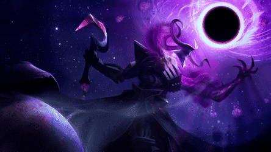

Ei você que quer ser um profssional dos games! ... é você mesmo!

Em League of Legends, os jogadores assumem o papel de "invocadores", controlando campeões com habilidades únicas e que lutam com seu time contra outros invocadores ou campeões controlados pelo computador. No modo mais popular do jogo, o objetivo de cada time é destruir o nexus da equipe adversária, uma construção localizada na base e protegida por outras estruturas. Cada partida de League of Legends é distinta, pois os campeões sempre começam fracos e progridem através da acumulação de ouro e da experiência ao longo do jogo.[5]
League of Legends foi bem recebido desde o seu lançamento e sua popularidade cresceu ao decorrer dos anos. Em julho de 2012, foi o jogo para computador mais jogado na América do Norte e Europa em termos de número de horas jogadas.[6] Até janeiro de 2014, mais de 67 milhões de pessoas jogavam League of Legends por mês, 27 milhões por dia e mais de 7,5 milhões durante o horário de pico.[7]
League of Legends tem um cenário competitivo grande e ativo. Na América do Norte e Europa, a Riot Games organiza o League of Legends Championship Series (também conhecido como "LCS"), que consiste em 10 times profissionais de cada continente.[8] Competições regionais semelhantes existem na China, Coreia, Taiwan e Sudeste da Ásia, Brasil, América Latina, Turquia, CEI (Comunidade dos Estados Independentes - antiga União Soviética) e Japão. Essas competições regionais levam os melhores times ao League of Legends World Championship, um campeonato mundial que ocorre anualmente. Em 2013, o prêmio do torneio foi de $1 milhão e teve 32 milhões de espectadores onlines.[9] O torneio de 2014 teve o quinto maior prêmio da história de eSports, dando 2,3 milhões de dólares ao time vencedor.[10][11]